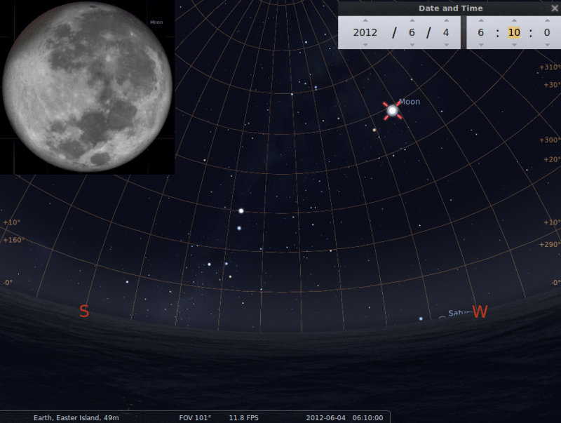
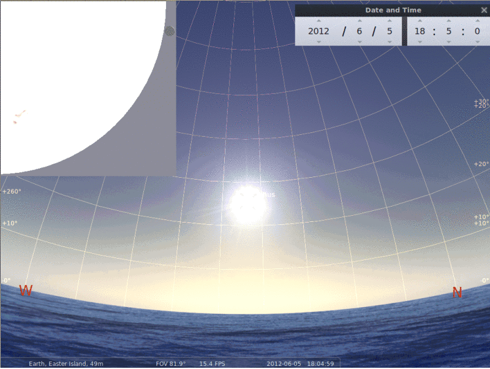

Programa de Eventos
Ubicación: Museo Antropológico P. Sebastian Englert
Horario: 10:30 - 13:00
Taller de astronomía para todo el público. Incluye actividades interactivas demonstrando propiedades de la luz, el sistema solar, la Luna y sus cráteres, el transito y mucho más! Tambien se presentaran charlas de 15 minutos por astrónomos profesionales sobre diversos tópicos.
Al atardecer (18:30) estaremos en Ahu Tahai donde se observará el cielo nocturno, si las condiciones climatológicas lo perminten.
Ubicación: Museo Antropológico P. Sebastian Englert
Horario: 10:30 - 13:00, 4:00-6:00
Taller de astronomía para todo el público, continuación del día anterior. Incluye actividades interactivas demonstrando propiedades de la luz, el sistema solar, la Luna y sus cráteres, el transito y mucho más! Tambien se presentaran nuevas charlas de 15 minutos por astrónomos profesionales sobre diversos tópicos.
Al atardecer (18:30) se observará el cielo nocturno desde Ahu Tahai. Esta noche hay un eclipse lunar parcial que se podrá ver a la madrugada del próximo día. Nos reuniremos antes del comienzo del eclipse hasta su fin (4:00-6:00).
Ubicación: diversos
Horario: diversos
Nuestro grupo de astrónomos visitará las diversas escuelas en la Isla para dar breves presentaciones sobre el tránsito con actvidades interactivas para los estudiantes.
Ubicación: Ahu Tahai
Horario: 16:00 - 19:30
Observación del tránsito de Venus. El tránsito comienza a las 16:10 horas y dura hasta 22:45. La puesta del Sol es a las 18:30 aproximadamente. Por eso podremos observar el transito por 2 horas. Luego de la puesta del Sol habrá una presentación del cielo nocturno.